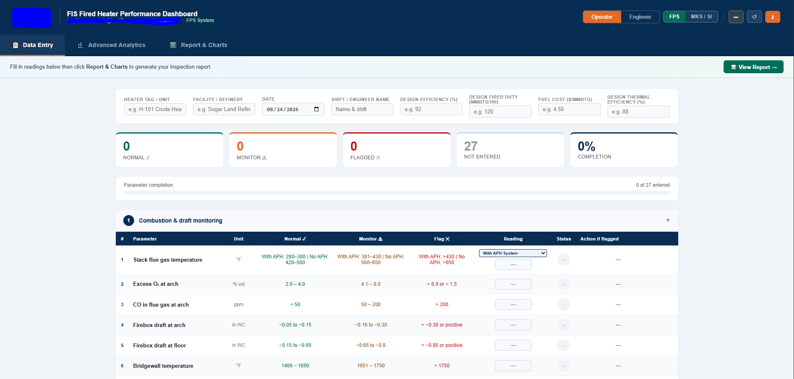
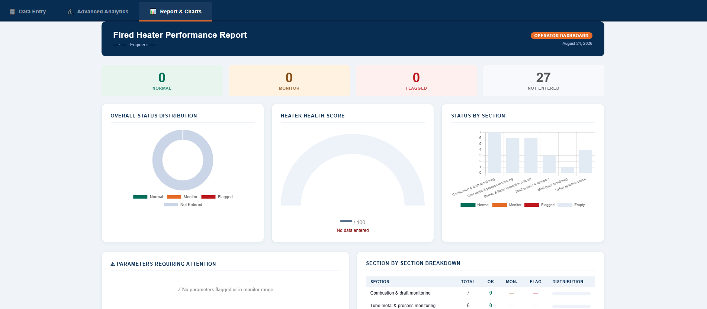
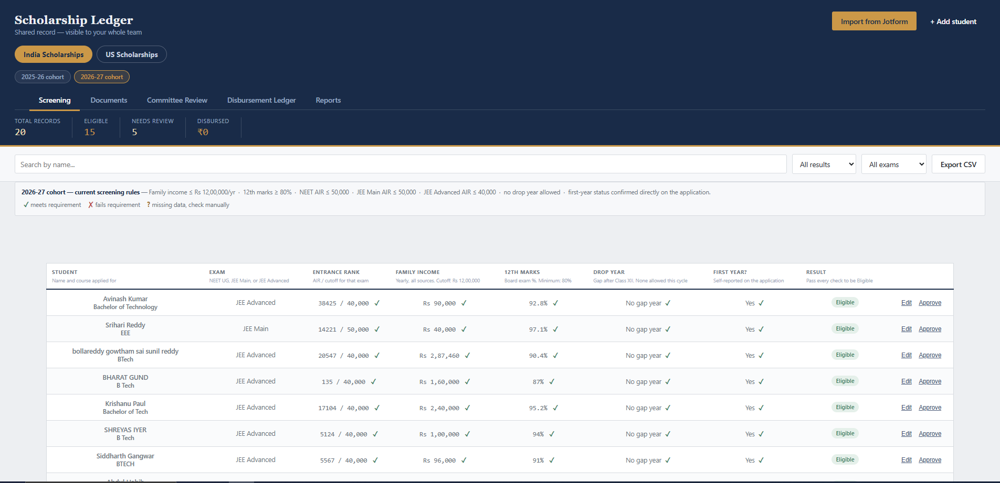
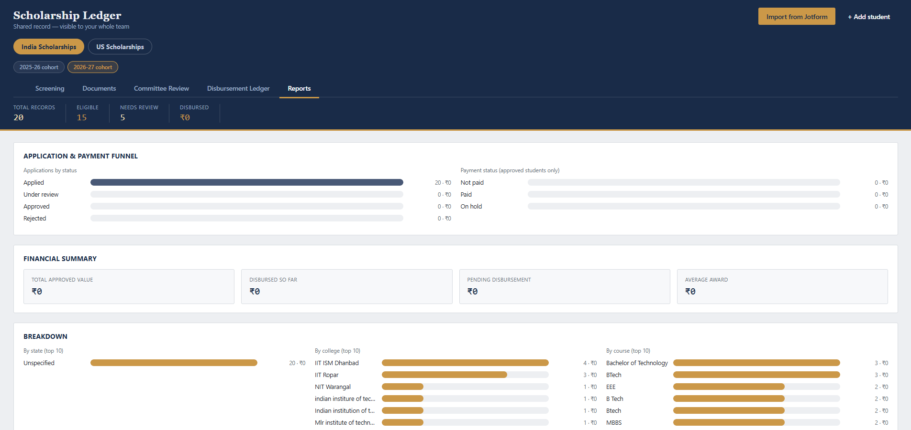

Alongside social media strategy, I work with founders and domain experts to turn their manual processes — spreadsheets, paper forms, tribal knowledge — into working software. I don't write code line by line. I direct AI tools through the full build: defining requirements, catching bugs, testing against real data, and shipping something a team can actually use day to day.
The problem: Fired heater inspections at refineries were run on paper — clipboards, spreadsheets, manual cross-referencing. Deviations were spotted days late, units confused Imperial and Metric readings, and there was no automatic report for engineering leadership. The client, a 50-year fired heater engineering veteran, had built the methodology by hand in Excel. It needed to become a tool his team could actually run in the field.
What we built: A single offline HTML dashboard covering 52 parameters across 11 monitoring sections, with a live Operator mode for shift rounds and an Engineer mode for periodic assessment. Every reading is checked in real time against Normal, Monitor, and Flag thresholds, with specific corrective action text attached to each one — not generic advice.


The problem: SDEF runs a Merit cum Means Scholarship program across India and Texas. The India side was fully manual — applications through Jotform, eligibility checked by hand, disbursement tracked across spreadsheets. The team needed something to take over the repetitive checking without losing the judgment calls that genuinely need a person.
What we built: A shared ledger that screens every applicant automatically against the foundation's published criteria — entrance exam rank, family income, grade marks, drop-year policy — while flagging anything ambiguous for a human to review rather than silently rejecting it.


If your team is manually tracking something that could run itself — applications, inspections, approvals, anything repetitive with real rules behind it — let's talk about what that could look like as a tool.
Book a free 15-min call